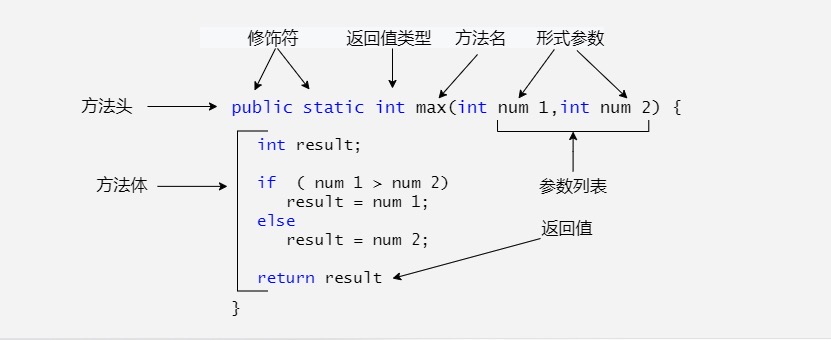

Java Methods
In the previous chapters, we often usedSystem.out.println(), so what is it?
- println() is a method.
- System is a system class.
- out is the standard output object.
This statement is used to call the println() method in the standard output object out of the system class System.
So what is a method?
A Java method is a collection of statements that together perform a function.
- A method is an ordered combination of steps to solve a class of problems.
- A method is contained in a class or object.
- A method is created in the program and referenced elsewhere.
Advantages of Methods
- 1. It makes the program shorter and clearer.
- 2. It is beneficial for program maintenance.
- 3. It can improve the efficiency of program development.
- 4. It improves code reusability.
Method Naming Rules
- 1. The first word of a method name should begin with a lowercase letter, and subsequent words should begin with an uppercase letter, without using separators. For example:addPerson。
- 2. Underscores may appear in JUnit test method names to separate logical components of the name. A typical pattern is:test<MethodUnderTest>_<state>, for exampletestPop_emptyStack。
Method Definition
In general, defining a method includes the following syntax:
A method consists of a method header and a method body. Below are all the parts of a method:
- Modifiers:Modifiers are optional and tell the compiler how to call the method. They define the access type of the method.
- Return value type:A method may return a value. returnValueType is the data type of the value returned by the method. Some methods perform the required operation but do not return a value. In this case, returnValueType is the keywordvoid。
- Method name:It is the actual name of the method. The method name and parameter table together constitute the method signature.
- Parameter type:Parameters act like placeholders. When a method is called, a value is passed to the parameter. This value is called an actual argument or variable. The parameter list refers to the parameter types, order, and number of parameters. Parameters are optional; a method may contain no parameters.
- Method body:The method body contains concrete statements that define the functionality of the method.

For example:
There can be multiple parameters:
Note:In some other languages, methods are referred to as procedures and functions. A method that returns a non-void value is called a function; a method that returns a void value is called a procedure.
Example
The following method contains 2 parameters, num1 and num2, and it returns the maximum of these two parameters.
A more concise way to write it (ternary operator):
Method Invocation
Java supports two ways to call a method, depending on whether the method returns a value.
When a program calls a method, program control is transferred to the called method. Control is returned to the program when the called method executes a return statement or reaches the closing brace of the method body.
When a method returns a value, the method call is usually treated as a value. For example:
If a method returns void, the method call must be a statement. For example, the method println returns void. The following call is a statement:
Example
The following example demonstrates how to define a method and how to call it:
TestMax.java file code:
The above example compiles and runs with the following result:
5 和 2 比较，最大值是：5
This program contains a main method and a max method. The main method is called by the JVM. Apart from that, the main method is no different from other methods.
The header of the main method is fixed, as shown in the example. It has modifiers public and static, returns a void value, the method name is main, and it takes a String[] type parameter. String[] indicates that the parameter is an array of strings.
The void Keyword
This section explains how to declare and call a void method.
The following example declares a method named printGrade and calls it to print the given score.
Example
TestVoidMethod.java file code:
The above example compiles and runs with the following result:
C
Here, the printGrade method is a void type method; it does not return a value.
A call to a void method must be a statement. Therefore, it is called as a statement on the third line of the main method, just like any statement ending with a semicolon.
Passing Parameters by Value
When calling a method, you need to provide arguments. You must provide them in the order specified by the parameter list.
For example, the following method prints a message n times in a row:
TestVoidMethod.java file code:
Example
The following example demonstrates the effect of passing by value.
The program creates a method that swaps two variables.
TestPassByValue.java file code:
The above example compiles and runs with the following result:
交换前 num1 的值为：1 ，num2 的值为：2 进入 swap 方法 交换前 n1 的值为：1，n2 的值：2 交换后 n1 的值为 2，n2 的值：1 交换后 num1 的值为：1 ，num2 的值为：2
Pass two arguments to call the swap method. Interestingly, after the method is called, the values of the actual arguments do not change.
Method Overloading
The max method used above only works for int type data. But what if you want to get the maximum of two floating-point type data?
The solution is to create another method with the same name but different parameters, as shown in the following code:
If you pass int type parameters when calling the max method, the max method with int parameters will be called;
If double type parameters are passed, the max method body with double type will be called. This is called method overloading;
That is, two methods of a class have the same name but different parameter lists.
The Java compiler determines which method should be called based on the method signature.
Method overloading can make programs clearer and more readable. Methods that perform closely related tasks should use the same name.
Overloaded methods must have different parameter lists. You cannot overload methods based solely on differences in modifiers or return types.
Variable Scope
The scope of a variable is the part of the program where the variable can be referenced.
Variables defined inside a method are called local variables.
The scope of a local variable starts from its declaration and continues until the end of the block that contains it.
Local variables must be declared before they can be used.
The scope of a method's parameters covers the entire method. Parameters are actually local variables.
Variables declared in the initialization part of a for loop have a scope that spans the entire loop.
However, variables declared in the loop body have a scope from their declaration to the end of the loop body. It contains variable declarations as shown below:

You can declare a local variable with the same name multiple times in different non-nested blocks in a method, but you cannot declare a local variable twice in nested blocks.
Using Command-Line Arguments
Sometimes you want to pass messages to a program when you run it. This is achieved by passing command-line arguments to the main() function.
Command-line arguments are the information that follows the program name when the program is executed.
Example
The following program prints all command-line arguments:
CommandLine.java file code:
Run this program as follows:
$ javac CommandLine.java $ java CommandLine this is a command line 200 -100 args[0]: this args[1]: is args[2]: a args[3]: command args[4]: line args[5]: 200 args[6]: -100
Constructor Methods
A constructor is a special method used to create objects of a class. When an object is created using the new keyword, the constructor is automatically called to initialize the object's properties.
Constructor characteristics:
- The method name is the same as the class name: The constructor's name must match the class name.
- No return type: Constructors have no return type; even
voidvoid cannot be written. - Automatically called when creating an object: Every time you use
newnew to create an object, the constructor is automatically called. - Can be overloaded: You can define multiple constructors for the same class, but the parameter lists of these constructors must be different (i.e., they constitute an overload).
Whether or not you define a custom constructor, all classes have constructors, because Java automatically provides a default constructor. The access modifier of the default constructor is the same as that of the class (if the class is public, the constructor is also public; if the class is changed to protected, the constructor is also changed to protected).
Once you define your own constructor, the default constructor becomes invalid.
Example
The following is an example of using a constructor:
You can call the constructor to initialize an object like this:
ConsDemo.java file code:
The running result is as follows:
10 20
For more content, refer to the next chapter:Java Constructors。
Variable Arguments
Starting with JDK 1.5, Java supports passing variable arguments of the same type to a method.
The declaration of a method's variable arguments is as follows:
In the method declaration, add an ellipsis (...) after the specified parameter type.
A method can specify only one variable argument, and it must be the last parameter of the method. Any ordinary parameters must be declared before it.
Example
VarargsDemo.java file code:
The above example compiles and runs with the following result:
The max value is 56.5 The max value is 3.0
The finalize() Method
The finalize method has been deprecated in Java 9 and will be removed in future Java versions. It is recommended to use try-with-resourcestry-with-resources 或 java.lang.ref.Cleanerto manage resources.
Java allows defining such a method, which is called before an object is destroyed (collected) by the garbage collector. This method is called finalize(), and it is used to clean up the object being collected.
For example, you can use finalize() to ensure that a file opened by an object is closed.
In the finalize() method, you must specify the operations to be performed when the object is destroyed.
The general format of finalize() is:
The keyword protected is a qualifier that ensures the finalize() method will not be called by code outside of the class.
Of course, Java's memory reclamation can be done automatically by the JVM. If you want to use it manually, you can use the above method.
Example
FinalizationDemo.java file code:
Running the above code, the output result is as follows:
$ javac FinalizationDemo.java $ java FinalizationDemo Cake Object 1is created Cake Object 2is created Cake Object 3is created Cake Object 3is disposed Cake Object 2is disposed
Alternative:It is recommended to use the AutoCloseable interface, combined with a try-with-resources statement, to automatically close resources. For example:
try (Resource res = new Resource()) {
// 使用资源
} catch (Exception e) {
e.printStackTrace();
} Other Extensions
Lichee
442***894@qq.com
When an object is created, a constructor is used to initialize the object. The constructor has the same name as its class, but has no return value.
Constructors are usually used to assign initial values to the instance variables of a class, or to perform other necessary steps to create a complete object.
Whether or not you define a custom constructor, all classes have constructors, because Java automatically provides a default constructor that initializes all members to 0.
Once you define your own constructor, the default constructor becomes invalid.
Lichee
442***894@qq.com
So that's how it is.
aur***ys@gmai.com
When an object is created, the system automatically calls the constructor.
So that's how it is.
aur***ys@gmai.com
D I R N
117***8664@qq.com
Reference address
Regarding Java variable arguments:
A function can have at most one variable argument, and the variable argument must be the last parameter. For variable arguments, the compiler converts them into an array, so inside the function, the variable argument name can be regarded as the array name.
且
These two methods have the same name and cannot be used as overloads.
Variable arguments, that is, you can pass 0 or more parameters to a function, for example:
void function("Wallen","John","Smith"); void function(new String [] {"Wallen","John","Smith"});These two calling methods have the same effect.
Regarding method overloading with variable arguments.
void function(String... args); void function(String args1,String args2); function("Wallen","John");Methods with fixed parameters are matched first.
D I R N
117***8664@qq.com
Reference address
Li Baomin
141***3308@qq.com
Reference address
Consolidating understanding of parameter binding & variable types in methods:
Parameter binding:When the caller passes arguments to an instance method, the values passed at the call are bound one by one according to the parameter positions.
Example of passing primitive type parameters:
public class Main { public static void main(String[] args) { Person p = new Person(); int n = 15; // n的值为15 tip:基本类型变量 p.setAge(n); // 传入n的值 tip:参数n传递的是值 System.out.println(p.getAge()); // 15 n = 20; // n的值改为20 System.out.println(p.getAge()); // 15还是20? tip:15 } } class Person { private int age; public int getAge() { return this.age; } public void setAge(int age) { this.age = age; } }Passing primitive type parameters is a copy of the caller's values; subsequent modifications by either side do not affect each other.
Primitive type variables: "hold a certain value", and the variable name points to the specific value.
Example of passing reference type parameters:
public class Main { public static void main(String[] args) { Game g = new Game(); String[] gamename = { "王者", "荣耀" }; // gamename变量指向的是这个数组的内存地址 g.setName(gamename); // 传入gamename数组 tip:传入的是内存地址 ↑ System.out.println(g.getName()); // 王者荣耀 gamename[1] = "农药"; // gamename数组的第二个元素修改为"农药" System.out.println(g.getName()); // "王者荣耀"还是"王者农药"? tip:王者农药 } } class Game { private String[] name; public String getName() { return this.name[0] + " " + this.name[1]; } public void setName(String[] name) { this.name = name; } }For reference type parameter passing, the caller's variable and the receiver's parameter variable point to the same array address (memory address). Any modification made by either side to this object (array) will affect the other side (because they point to the same object).
Reference type variables: the variable name points to the memory address of an object.
Li Baomin
141***3308@qq.com
Reference address